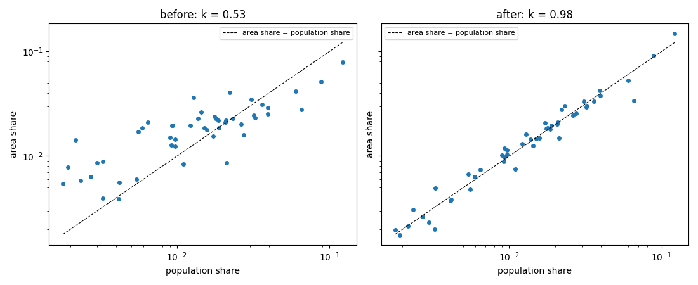
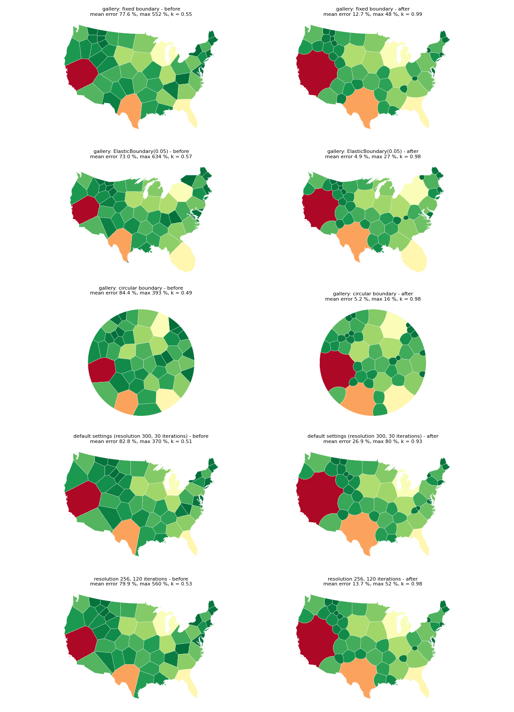

Final cell extraction now uses the weighted distance of the relaxation (mean area error 73-96 % to 5-14 %), and runs whose mean polygon area error exceeds 20 % are reported as not converged with a warning.
RasterBackend assigned pixels with the weighted distance dist^2 / w during relaxation, but the final polygon extraction used plain nearest-generator labeling. Output areas therefore scaled like weight^0.55. The extraction now uses the same weighted distance; unweighted results are unchanged.VoronoiOptions.max_mean_area_error_pct (default 20, None disables). After extraction, if the mean absolute polygon area error against the target (equal area, or proportional to weights) exceeds it, converged is set to False and a RuntimeWarning states the mean and maximum errors and likely causes. It applies to every backend.area_equalizer_rate has no effect with weights, the geodesic warning no longer recommends area_eq_weight, ExactBackend.final_area_cv is documented as not comparable with the raster value.Mean and max are |area / target - 1| of the output polygons; k is the slope of log area against log population (1.0 is proportional). "converged" is the reported metric.
| case | mean before | max before | k before | mean after | max after | k after | converged before -> after |
|---|---|---|---|---|---|---|---|
| gallery: fixed boundary (300 iterations, area_cv_tol 0.05) | 77.6 % | 552 % | 0.55 | 12.7 % | 48 % | 0.99 | False -> False |
| gallery: ElasticBoundary(0.05) | 73.0 % | 634 % | 0.57 | 4.9 % | 27 % | 0.98 | True -> True |
| gallery: circular boundary | 84.4 % | 393 % | 0.49 | 5.2 % | 16 % | 0.98 | False -> False |
| default settings (resolution 300, 30 iterations) | 82.8 % | 370 % | 0.51 | 26.9 % | 80 % | 0.93 | False -> False, now with warning |
| resolution 256, 120 iterations | 79.9 % | 560 % | 0.53 | 13.7 % | 52 % | 0.98 | False -> False |
The default 30 iterations are not enough for weighted runs: the mean error is 27 %, above the limit, so the run now warns. Max errors stay at 27-80 % even where the mean is good, which is why the gate uses the mean.
ExactBackend and geodesic labeling ignore weights (they already warned). With a stopping tolerance that main accepts, they reported convergence; now they do not.
| backend | mean error | max error | converged before -> after | gate warning |
|---|---|---|---|---|
| ExactBackend, area_cv_tol=1.0 | 195.9 % | 1780 % | True -> False | yes |
| RasterBackend(resolution=256, distance_mode='geodesic'), tol=5000 | 193.6 % | 1696 % | True -> False | yes |
plot_voronoi_elastic_boundary.py, plot_voronoi_custom_boundary.py, plot_voronoi_cartogram.py) and plot_voronoi_districts.py run without a new warning.None, option validation).Regenerate with uv run python make_figures.py from a carto-flow checkout (the "before" panels patch the extraction back to main's two lines; it takes several minutes because of the elastic runs).

Area share against population share (resolution 256, 120 iterations); the dashed line is proportional.

Population cartograms before (left) and after (right): the three weighted gallery configurations, the default settings, and the configuration used by the test.